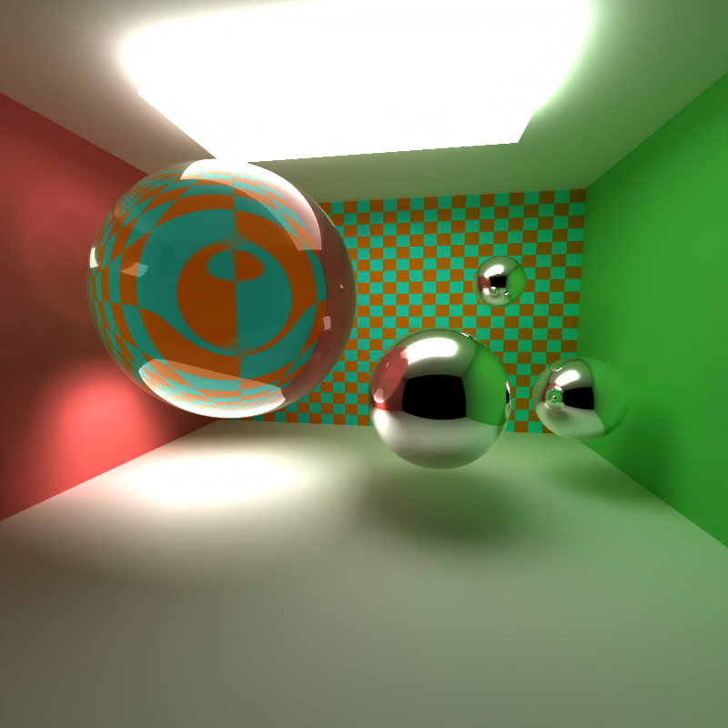
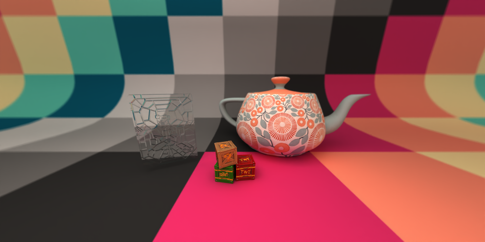
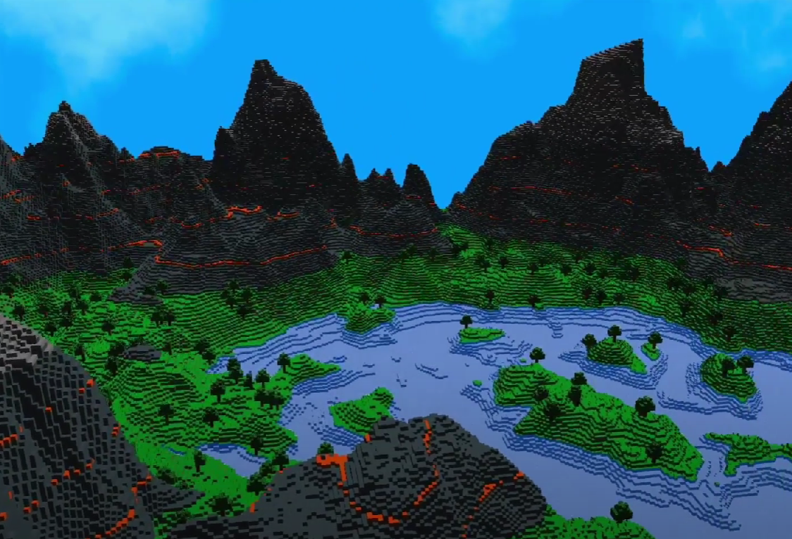
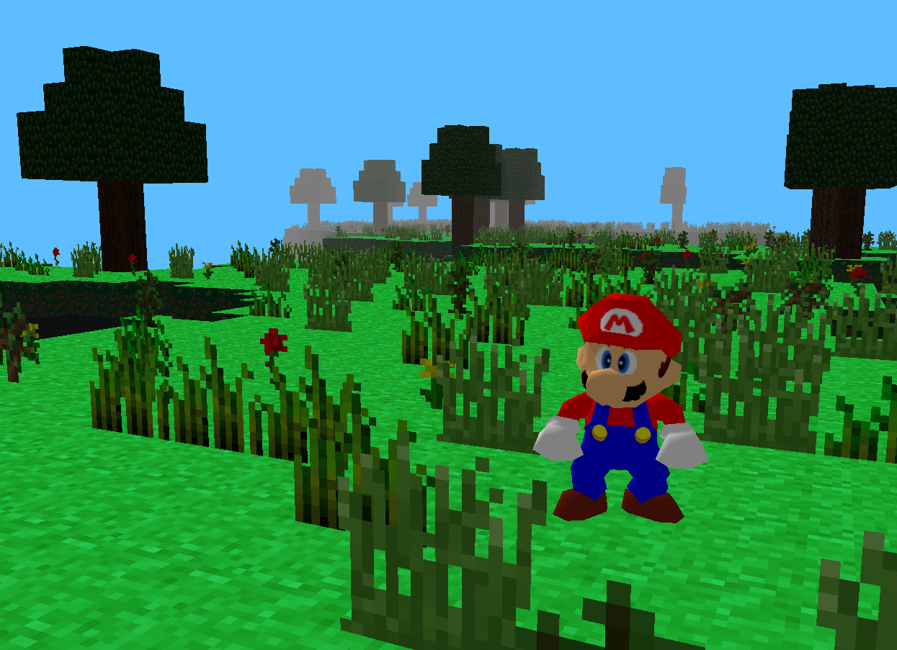
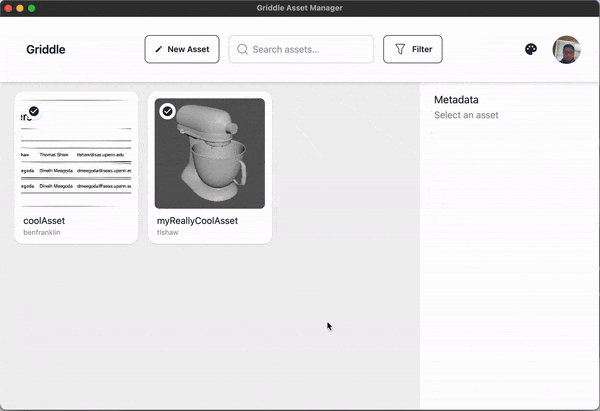

Projects
GPU Path Tracer
An Interactive Path Tracer in CUDA & C++


Mini-Minecraft
Minecraft from Scratch in C++


FK/IK Animation System From Scratch
FK, Limb-Based IK & Coordinate Cyclic Descent IK


OpenUSD Asset Database
A OpenUSD Browser for Asset Artists
